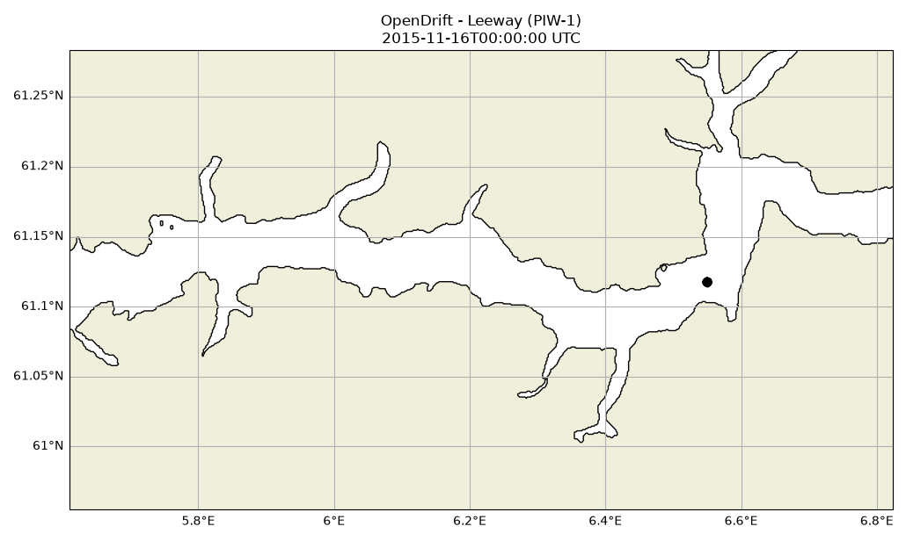
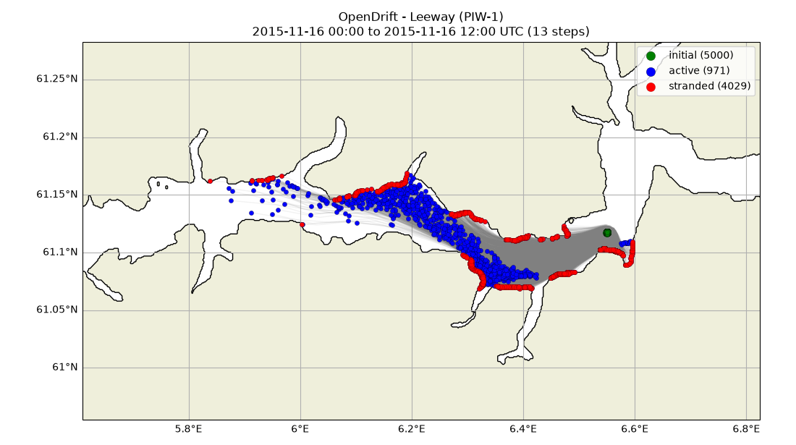

Note
Go to the end to download the full example code.
Fjord
13:26:07 INFO opendrift:579: OpenDriftSimulation initialised (version 1.14.11 / v1.14.12-91-g231396a)
Add readers for wind and current
reader_arome = reader_netCDF_CF_generic.Reader(tdf +
'16Nov2015_NorKyst_z_surface/arome_subset_16Nov2015.nc')
reader_norkyst = reader_netCDF_CF_generic.Reader(tdf +
'16Nov2015_NorKyst_z_surface/norkyst800_subset_16Nov2015.nc')
o.add_reader([reader_norkyst, reader_arome])
13:26:07 INFO opendrift.readers:67: Opening file with xr.open_dataset
13:26:07 INFO opendrift.readers.reader_netCDF_CF_generic:340: Detected dimensions: {'time': 'time', 'x': 'x', 'y': 'y'}
13:26:07 INFO opendrift.readers:67: Opening file with xr.open_dataset
13:26:07 INFO opendrift.readers.reader_netCDF_CF_generic:340: Detected dimensions: {'x': 'X', 'y': 'Y', 'z': 'depth', 'time': 'time'}
Seed elements
time = reader_arome.start_time
object_type = 1 # 1: Person-in-water (PIW), unknown state (mean values)
o.seed_elements(lon=6.55, lat=61.117594, radius=50, number=5000, time=time, object_type=object_type)
13:26:07 INFO opendrift.models.leeway:321: Seeding elements of object type 1: PIW-1 (Person-in-water (PIW), unknown state (mean values))
13:26:07 INFO opendrift.models.basemodel.environment:204: Adding a global landmask from GSHHG
13:26:13 INFO opendrift.models.basemodel.environment:238: Fallback values will be used for the following variables which have no readers:
13:26:13 INFO opendrift.models.basemodel.environment:241: sea_surface_wave_stokes_drift_x_velocity: 0.000000
13:26:13 INFO opendrift.models.basemodel.environment:241: sea_surface_wave_stokes_drift_y_velocity: 0.000000
Running model for 12 hours, using small time step due to high resolution coastline
o.run(duration=timedelta(hours=12), time_step=300, time_step_output=3600)
13:26:13 INFO opendrift:1921: Skipping environment variable sea_surface_wave_stokes_drift_x_velocity because of condition ['drift:stokes_drift', 'is', False]
13:26:13 INFO opendrift:1921: Skipping environment variable sea_surface_wave_stokes_drift_y_velocity because of condition ['drift:stokes_drift', 'is', False]
13:26:13 INFO opendrift:1932: Storing previous values of element property lon because of condition (('general:coastline_action', 'in', ['stranding', 'previous']), 'or', ('general:seafloor_action', 'in', ['previous']))
13:26:13 INFO opendrift:1932: Storing previous values of element property lat because of condition (('general:coastline_action', 'in', ['stranding', 'previous']), 'or', ('general:seafloor_action', 'in', ['previous']))
13:26:14 INFO opendrift:968: Using existing reader for land_binary_mask to move elements to ocean
13:26:14 INFO opendrift:1000: All points are in ocean
13:26:14 INFO opendrift:2248: 2015-11-16 00:00:00 - step 1 of 144 - 5000 active elements (0 deactivated)
13:26:14 INFO opendrift:2248: 2015-11-16 00:05:00 - step 2 of 144 - 5000 active elements (0 deactivated)
13:26:14 INFO opendrift:2248: 2015-11-16 00:10:00 - step 3 of 144 - 5000 active elements (0 deactivated)
13:26:14 INFO opendrift:2248: 2015-11-16 00:15:00 - step 4 of 144 - 5000 active elements (0 deactivated)
13:26:14 INFO opendrift:2248: 2015-11-16 00:20:00 - step 5 of 144 - 5000 active elements (0 deactivated)
13:26:14 INFO opendrift:2248: 2015-11-16 00:25:00 - step 6 of 144 - 5000 active elements (0 deactivated)
13:26:14 INFO opendrift:2248: 2015-11-16 00:30:00 - step 7 of 144 - 5000 active elements (0 deactivated)
13:26:14 INFO opendrift:2248: 2015-11-16 00:35:00 - step 8 of 144 - 5000 active elements (0 deactivated)
13:26:14 INFO opendrift:2248: 2015-11-16 00:40:00 - step 9 of 144 - 5000 active elements (0 deactivated)
13:26:14 INFO opendrift:2248: 2015-11-16 00:45:00 - step 10 of 144 - 5000 active elements (0 deactivated)
13:26:14 INFO opendrift:2248: 2015-11-16 00:50:00 - step 11 of 144 - 5000 active elements (0 deactivated)
13:26:14 INFO opendrift:2248: 2015-11-16 00:55:00 - step 12 of 144 - 5000 active elements (0 deactivated)
13:26:14 INFO opendrift:2248: 2015-11-16 01:00:00 - step 13 of 144 - 5000 active elements (0 deactivated)
13:26:14 INFO opendrift:2248: 2015-11-16 01:05:00 - step 14 of 144 - 5000 active elements (0 deactivated)
13:26:14 INFO opendrift:2248: 2015-11-16 01:10:00 - step 15 of 144 - 5000 active elements (0 deactivated)
13:26:14 INFO opendrift:2248: 2015-11-16 01:15:00 - step 16 of 144 - 5000 active elements (0 deactivated)
13:26:14 INFO opendrift:2248: 2015-11-16 01:20:00 - step 17 of 144 - 5000 active elements (0 deactivated)
13:26:14 INFO opendrift:2248: 2015-11-16 01:25:00 - step 18 of 144 - 5000 active elements (0 deactivated)
13:26:14 INFO opendrift:2248: 2015-11-16 01:30:00 - step 19 of 144 - 5000 active elements (0 deactivated)
13:26:14 INFO opendrift:2248: 2015-11-16 01:35:00 - step 20 of 144 - 5000 active elements (0 deactivated)
13:26:14 INFO opendrift:2248: 2015-11-16 01:40:00 - step 21 of 144 - 5000 active elements (0 deactivated)
13:26:14 INFO opendrift:2248: 2015-11-16 01:45:00 - step 22 of 144 - 4999 active elements (1 deactivated)
13:26:14 INFO opendrift:2248: 2015-11-16 01:50:00 - step 23 of 144 - 4999 active elements (1 deactivated)
13:26:14 INFO opendrift:2248: 2015-11-16 01:55:00 - step 24 of 144 - 4998 active elements (2 deactivated)
13:26:14 INFO opendrift:2248: 2015-11-16 02:00:00 - step 25 of 144 - 4996 active elements (4 deactivated)
13:26:14 INFO opendrift:2248: 2015-11-16 02:05:00 - step 26 of 144 - 4991 active elements (9 deactivated)
13:26:15 INFO opendrift:2248: 2015-11-16 02:10:00 - step 27 of 144 - 4983 active elements (17 deactivated)
13:26:15 INFO opendrift:2248: 2015-11-16 02:15:00 - step 28 of 144 - 4964 active elements (36 deactivated)
13:26:15 INFO opendrift:2248: 2015-11-16 02:20:00 - step 29 of 144 - 4946 active elements (54 deactivated)
13:26:15 INFO opendrift:2248: 2015-11-16 02:25:00 - step 30 of 144 - 4904 active elements (96 deactivated)
13:26:15 INFO opendrift:2248: 2015-11-16 02:30:00 - step 31 of 144 - 4866 active elements (134 deactivated)
13:26:15 INFO opendrift:2248: 2015-11-16 02:35:00 - step 32 of 144 - 4819 active elements (181 deactivated)
13:26:15 INFO opendrift:2248: 2015-11-16 02:40:00 - step 33 of 144 - 4767 active elements (233 deactivated)
13:26:15 INFO opendrift:2248: 2015-11-16 02:45:00 - step 34 of 144 - 4687 active elements (313 deactivated)
13:26:15 INFO opendrift:2248: 2015-11-16 02:50:00 - step 35 of 144 - 4614 active elements (386 deactivated)
13:26:15 INFO opendrift:2248: 2015-11-16 02:55:00 - step 36 of 144 - 4541 active elements (459 deactivated)
13:26:15 INFO opendrift:2248: 2015-11-16 03:00:00 - step 37 of 144 - 4457 active elements (543 deactivated)
13:26:15 INFO opendrift:2248: 2015-11-16 03:05:00 - step 38 of 144 - 4371 active elements (629 deactivated)
13:26:15 INFO opendrift:2248: 2015-11-16 03:10:00 - step 39 of 144 - 4279 active elements (721 deactivated)
13:26:15 INFO opendrift:2248: 2015-11-16 03:15:00 - step 40 of 144 - 4193 active elements (807 deactivated)
13:26:15 INFO opendrift:2248: 2015-11-16 03:20:00 - step 41 of 144 - 4093 active elements (907 deactivated)
13:26:15 INFO opendrift:2248: 2015-11-16 03:25:00 - step 42 of 144 - 4015 active elements (985 deactivated)
13:26:15 INFO opendrift:2248: 2015-11-16 03:30:00 - step 43 of 144 - 3931 active elements (1069 deactivated)
13:26:15 INFO opendrift:2248: 2015-11-16 03:35:00 - step 44 of 144 - 3837 active elements (1163 deactivated)
13:26:15 INFO opendrift:2248: 2015-11-16 03:40:00 - step 45 of 144 - 3750 active elements (1250 deactivated)
13:26:15 INFO opendrift:2248: 2015-11-16 03:45:00 - step 46 of 144 - 3680 active elements (1320 deactivated)
13:26:16 INFO opendrift:2248: 2015-11-16 03:50:00 - step 47 of 144 - 3600 active elements (1400 deactivated)
13:26:16 INFO opendrift:2248: 2015-11-16 03:55:00 - step 48 of 144 - 3547 active elements (1453 deactivated)
13:26:16 INFO opendrift:2248: 2015-11-16 04:00:00 - step 49 of 144 - 3500 active elements (1500 deactivated)
13:26:16 INFO opendrift:2248: 2015-11-16 04:05:00 - step 50 of 144 - 3465 active elements (1535 deactivated)
13:26:16 INFO opendrift:2248: 2015-11-16 04:10:00 - step 51 of 144 - 3428 active elements (1572 deactivated)
13:26:16 INFO opendrift:2248: 2015-11-16 04:15:00 - step 52 of 144 - 3398 active elements (1602 deactivated)
13:26:16 INFO opendrift:2248: 2015-11-16 04:20:00 - step 53 of 144 - 3363 active elements (1637 deactivated)
13:26:16 INFO opendrift:2248: 2015-11-16 04:25:00 - step 54 of 144 - 3337 active elements (1663 deactivated)
13:26:16 INFO opendrift:2248: 2015-11-16 04:30:00 - step 55 of 144 - 3321 active elements (1679 deactivated)
13:26:16 INFO opendrift:2248: 2015-11-16 04:35:00 - step 56 of 144 - 3301 active elements (1699 deactivated)
13:26:16 INFO opendrift:2248: 2015-11-16 04:40:00 - step 57 of 144 - 3283 active elements (1717 deactivated)
13:26:16 INFO opendrift:2248: 2015-11-16 04:45:00 - step 58 of 144 - 3261 active elements (1739 deactivated)
13:26:16 INFO opendrift:2248: 2015-11-16 04:50:00 - step 59 of 144 - 3247 active elements (1753 deactivated)
13:26:16 INFO opendrift:2248: 2015-11-16 04:55:00 - step 60 of 144 - 3237 active elements (1763 deactivated)
13:26:16 INFO opendrift:2248: 2015-11-16 05:00:00 - step 61 of 144 - 3225 active elements (1775 deactivated)
13:26:16 INFO opendrift:2248: 2015-11-16 05:05:00 - step 62 of 144 - 3213 active elements (1787 deactivated)
13:26:16 INFO opendrift:2248: 2015-11-16 05:10:00 - step 63 of 144 - 3195 active elements (1805 deactivated)
13:26:16 INFO opendrift:2248: 2015-11-16 05:15:00 - step 64 of 144 - 3176 active elements (1824 deactivated)
13:26:16 INFO opendrift:2248: 2015-11-16 05:20:00 - step 65 of 144 - 3157 active elements (1843 deactivated)
13:26:16 INFO opendrift:2248: 2015-11-16 05:25:00 - step 66 of 144 - 3132 active elements (1868 deactivated)
13:26:16 INFO opendrift:2248: 2015-11-16 05:30:00 - step 67 of 144 - 3110 active elements (1890 deactivated)
13:26:16 INFO opendrift:2248: 2015-11-16 05:35:00 - step 68 of 144 - 3085 active elements (1915 deactivated)
13:26:16 INFO opendrift:2248: 2015-11-16 05:40:00 - step 69 of 144 - 3055 active elements (1945 deactivated)
13:26:16 INFO opendrift:2248: 2015-11-16 05:45:00 - step 70 of 144 - 3033 active elements (1967 deactivated)
13:26:17 INFO opendrift:2248: 2015-11-16 05:50:00 - step 71 of 144 - 3005 active elements (1995 deactivated)
13:26:17 INFO opendrift:2248: 2015-11-16 05:55:00 - step 72 of 144 - 2981 active elements (2019 deactivated)
13:26:17 INFO opendrift:2248: 2015-11-16 06:00:00 - step 73 of 144 - 2960 active elements (2040 deactivated)
13:26:17 INFO opendrift:2248: 2015-11-16 06:05:00 - step 74 of 144 - 2934 active elements (2066 deactivated)
13:26:17 INFO opendrift:2248: 2015-11-16 06:10:00 - step 75 of 144 - 2897 active elements (2103 deactivated)
13:26:17 INFO opendrift:2248: 2015-11-16 06:15:00 - step 76 of 144 - 2869 active elements (2131 deactivated)
13:26:17 INFO opendrift:2248: 2015-11-16 06:20:00 - step 77 of 144 - 2843 active elements (2157 deactivated)
13:26:17 INFO opendrift:2248: 2015-11-16 06:25:00 - step 78 of 144 - 2816 active elements (2184 deactivated)
13:26:17 INFO opendrift:2248: 2015-11-16 06:30:00 - step 79 of 144 - 2776 active elements (2224 deactivated)
13:26:17 INFO opendrift:2248: 2015-11-16 06:35:00 - step 80 of 144 - 2755 active elements (2245 deactivated)
13:26:17 INFO opendrift:2248: 2015-11-16 06:40:00 - step 81 of 144 - 2728 active elements (2272 deactivated)
13:26:17 INFO opendrift:2248: 2015-11-16 06:45:00 - step 82 of 144 - 2700 active elements (2300 deactivated)
13:26:17 INFO opendrift:2248: 2015-11-16 06:50:00 - step 83 of 144 - 2665 active elements (2335 deactivated)
13:26:17 INFO opendrift:2248: 2015-11-16 06:55:00 - step 84 of 144 - 2633 active elements (2367 deactivated)
13:26:17 INFO opendrift:2248: 2015-11-16 07:00:00 - step 85 of 144 - 2607 active elements (2393 deactivated)
13:26:17 INFO opendrift:2248: 2015-11-16 07:05:00 - step 86 of 144 - 2579 active elements (2421 deactivated)
13:26:17 INFO opendrift:2248: 2015-11-16 07:10:00 - step 87 of 144 - 2536 active elements (2464 deactivated)
13:26:17 INFO opendrift:2248: 2015-11-16 07:15:00 - step 88 of 144 - 2491 active elements (2509 deactivated)
13:26:17 INFO opendrift:2248: 2015-11-16 07:20:00 - step 89 of 144 - 2461 active elements (2539 deactivated)
13:26:17 INFO opendrift:2248: 2015-11-16 07:25:00 - step 90 of 144 - 2421 active elements (2579 deactivated)
13:26:17 INFO opendrift:2248: 2015-11-16 07:30:00 - step 91 of 144 - 2384 active elements (2616 deactivated)
13:26:17 INFO opendrift:2248: 2015-11-16 07:35:00 - step 92 of 144 - 2333 active elements (2667 deactivated)
13:26:17 INFO opendrift:2248: 2015-11-16 07:40:00 - step 93 of 144 - 2288 active elements (2712 deactivated)
13:26:17 INFO opendrift:2248: 2015-11-16 07:45:00 - step 94 of 144 - 2261 active elements (2739 deactivated)
13:26:18 INFO opendrift:2248: 2015-11-16 07:50:00 - step 95 of 144 - 2222 active elements (2778 deactivated)
13:26:18 INFO opendrift:2248: 2015-11-16 07:55:00 - step 96 of 144 - 2196 active elements (2804 deactivated)
13:26:18 INFO opendrift:2248: 2015-11-16 08:00:00 - step 97 of 144 - 2168 active elements (2832 deactivated)
13:26:18 INFO opendrift:2248: 2015-11-16 08:05:00 - step 98 of 144 - 2136 active elements (2864 deactivated)
13:26:18 INFO opendrift:2248: 2015-11-16 08:10:00 - step 99 of 144 - 2107 active elements (2893 deactivated)
13:26:18 INFO opendrift:2248: 2015-11-16 08:15:00 - step 100 of 144 - 2073 active elements (2927 deactivated)
13:26:18 INFO opendrift:2248: 2015-11-16 08:20:00 - step 101 of 144 - 2045 active elements (2955 deactivated)
13:26:18 INFO opendrift:2248: 2015-11-16 08:25:00 - step 102 of 144 - 2010 active elements (2990 deactivated)
13:26:18 INFO opendrift:2248: 2015-11-16 08:30:00 - step 103 of 144 - 1982 active elements (3018 deactivated)
13:26:18 INFO opendrift:2248: 2015-11-16 08:35:00 - step 104 of 144 - 1957 active elements (3043 deactivated)
13:26:18 INFO opendrift:2248: 2015-11-16 08:40:00 - step 105 of 144 - 1930 active elements (3070 deactivated)
13:26:18 INFO opendrift:2248: 2015-11-16 08:45:00 - step 106 of 144 - 1898 active elements (3102 deactivated)
13:26:18 INFO opendrift:2248: 2015-11-16 08:50:00 - step 107 of 144 - 1861 active elements (3139 deactivated)
13:26:18 INFO opendrift:2248: 2015-11-16 08:55:00 - step 108 of 144 - 1832 active elements (3168 deactivated)
13:26:18 INFO opendrift:2248: 2015-11-16 09:00:00 - step 109 of 144 - 1801 active elements (3199 deactivated)
13:26:18 INFO opendrift:2248: 2015-11-16 09:05:00 - step 110 of 144 - 1767 active elements (3233 deactivated)
13:26:18 INFO opendrift:2248: 2015-11-16 09:10:00 - step 111 of 144 - 1731 active elements (3269 deactivated)
13:26:18 INFO opendrift:2248: 2015-11-16 09:15:00 - step 112 of 144 - 1701 active elements (3299 deactivated)
13:26:18 INFO opendrift:2248: 2015-11-16 09:20:00 - step 113 of 144 - 1670 active elements (3330 deactivated)
13:26:18 INFO opendrift:2248: 2015-11-16 09:25:00 - step 114 of 144 - 1639 active elements (3361 deactivated)
13:26:18 INFO opendrift:2248: 2015-11-16 09:30:00 - step 115 of 144 - 1613 active elements (3387 deactivated)
13:26:18 INFO opendrift:2248: 2015-11-16 09:35:00 - step 116 of 144 - 1585 active elements (3415 deactivated)
13:26:18 INFO opendrift:2248: 2015-11-16 09:40:00 - step 117 of 144 - 1556 active elements (3444 deactivated)
13:26:18 INFO opendrift:2248: 2015-11-16 09:45:00 - step 118 of 144 - 1521 active elements (3479 deactivated)
13:26:19 INFO opendrift:2248: 2015-11-16 09:50:00 - step 119 of 144 - 1489 active elements (3511 deactivated)
13:26:19 INFO opendrift:2248: 2015-11-16 09:55:00 - step 120 of 144 - 1457 active elements (3543 deactivated)
13:26:19 INFO opendrift:2248: 2015-11-16 10:00:00 - step 121 of 144 - 1432 active elements (3568 deactivated)
13:26:19 INFO opendrift:2248: 2015-11-16 10:05:00 - step 122 of 144 - 1410 active elements (3590 deactivated)
13:26:19 INFO opendrift:2248: 2015-11-16 10:10:00 - step 123 of 144 - 1380 active elements (3620 deactivated)
13:26:19 INFO opendrift:2248: 2015-11-16 10:15:00 - step 124 of 144 - 1362 active elements (3638 deactivated)
13:26:19 INFO opendrift:2248: 2015-11-16 10:20:00 - step 125 of 144 - 1337 active elements (3663 deactivated)
13:26:19 INFO opendrift:2248: 2015-11-16 10:25:00 - step 126 of 144 - 1318 active elements (3682 deactivated)
13:26:19 INFO opendrift:2248: 2015-11-16 10:30:00 - step 127 of 144 - 1293 active elements (3707 deactivated)
13:26:19 INFO opendrift:2248: 2015-11-16 10:35:00 - step 128 of 144 - 1268 active elements (3732 deactivated)
13:26:19 INFO opendrift:2248: 2015-11-16 10:40:00 - step 129 of 144 - 1246 active elements (3754 deactivated)
13:26:19 INFO opendrift:2248: 2015-11-16 10:45:00 - step 130 of 144 - 1231 active elements (3769 deactivated)
13:26:19 INFO opendrift:2248: 2015-11-16 10:50:00 - step 131 of 144 - 1210 active elements (3790 deactivated)
13:26:19 INFO opendrift:2248: 2015-11-16 10:55:00 - step 132 of 144 - 1188 active elements (3812 deactivated)
13:26:19 INFO opendrift:2248: 2015-11-16 11:00:00 - step 133 of 144 - 1180 active elements (3820 deactivated)
13:26:19 INFO opendrift:2248: 2015-11-16 11:05:00 - step 134 of 144 - 1153 active elements (3847 deactivated)
13:26:19 INFO opendrift:2248: 2015-11-16 11:10:00 - step 135 of 144 - 1139 active elements (3861 deactivated)
13:26:19 INFO opendrift:2248: 2015-11-16 11:15:00 - step 136 of 144 - 1124 active elements (3876 deactivated)
13:26:19 INFO opendrift:2248: 2015-11-16 11:20:00 - step 137 of 144 - 1111 active elements (3889 deactivated)
13:26:19 INFO opendrift:2248: 2015-11-16 11:25:00 - step 138 of 144 - 1093 active elements (3907 deactivated)
13:26:19 INFO opendrift:2248: 2015-11-16 11:30:00 - step 139 of 144 - 1081 active elements (3919 deactivated)
13:26:19 INFO opendrift:2248: 2015-11-16 11:35:00 - step 140 of 144 - 1057 active elements (3943 deactivated)
13:26:19 INFO opendrift:2248: 2015-11-16 11:40:00 - step 141 of 144 - 1038 active elements (3962 deactivated)
13:26:19 INFO opendrift:2248: 2015-11-16 11:45:00 - step 142 of 144 - 1029 active elements (3971 deactivated)
13:26:19 INFO opendrift:2248: 2015-11-16 11:50:00 - step 143 of 144 - 1014 active elements (3986 deactivated)
13:26:19 INFO opendrift:2248: 2015-11-16 11:55:00 - step 144 of 144 - 1004 active elements (3996 deactivated)
Print and plot results
print(o)
o.animation()
===========================
--------------------
Reader performance:
--------------------
/root/project/tests/test_data/16Nov2015_NorKyst_z_surface/norkyst800_subset_16Nov2015.nc
0:00:00.8 total
0:00:00.0 preparing
0:00:00.2 reading
0:00:00.1 interpolation
0:00:00.0 interpolation_time
0:00:00.6 rotating vectors
0:00:00.0 masking
--------------------
/root/project/tests/test_data/16Nov2015_NorKyst_z_surface/arome_subset_16Nov2015.nc
0:00:00.7 total
0:00:00.0 preparing
0:00:00.2 reading
0:00:00.1 interpolation
0:00:00.0 interpolation_time
0:00:00.5 rotating vectors
0:00:00.0 masking
--------------------
global_landmask
0:00:00.2 total
0:00:00.0 preparing
0:00:00.1 reading
0:00:00.0 masking
--------------------
Performance:
12.9 total time
6.8 configuration
0.1 preparing main loop
0.0 moving elements to ocean
5.9 main loop
0.5 updating elements
0.0 cleaning up
--------------------
===========================
Model: Leeway (OpenDrift version 1.14.11)
971 active LeewayObj particles (4029 deactivated, 0 scheduled)
-------------------
Environment variables:
-----
x_sea_water_velocity
y_sea_water_velocity
1) /root/project/tests/test_data/16Nov2015_NorKyst_z_surface/norkyst800_subset_16Nov2015.nc
-----
x_wind
y_wind
1) /root/project/tests/test_data/16Nov2015_NorKyst_z_surface/arome_subset_16Nov2015.nc
-----
land_binary_mask
1) global_landmask
Discarded readers:
Time:
Start: 2015-11-16 00:00:00 UTC
Present: 2015-11-16 12:00:00 UTC
Calculation steps: 144 * 0:05:00 - total time: 12:00:00
Output steps: 13 * 1:00:00
===========================
13:26:30 INFO opendrift:4899: Saving animation to /root/project/docs/source/gallery/animations/example_fjord_0.gif...
13:26:33 INFO opendrift:3307: Time to make animation: 0:00:13.681383

o.plot()

(<GeoAxes: title={'center': 'OpenDrift - Leeway (PIW-1)\n2015-11-16 00:00 to 2015-11-16 12:00 UTC (13 steps)'}>, <Figure size 1100x615.06 with 1 Axes>)
Total running time of the script: (0 minutes 42.265 seconds)